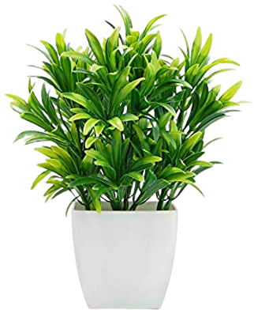

Bacteria Pet Microbe - Enemy of the Cold, Survivor of Darkness
Here, you can see healthy plants

Here, you can see unhealthy, diseased plants
As you can see from the differences between these photos, plants can easily become unhealthy and diseased. This semester, we studied microbes that can cause diseases in plants. As an fun experiment, we grow to nurture our own microbe over the course of the semester. This report details the experiments performed on my bacteria microbe.
Introduction
Microbes can be found almost anywhere in the world. This semester, we got the chance to nurture a microbe and test it in a variety of conditions. This experiment with a microbe pet is of interest as it showcases how a microbe is able to adapt and survive in different environments, which is important as these microbe affect plants that we require for their oxygen and their food purposes. We hope that we can study microbes so that we know how to create environments in which certain microbes can not survive.
I isolated my microbe from a culture grown during the "Microbes are Everywhere" experiment. My microbe was a bacterium taken from
microbes that grew in a culture isolated from a window in my apartment. The bacteria was orange at the time of isolation, and looked like a slimy, raised substance.
In these following experiments, the pet bacteria was tested to learn more about the biology of the organism and the conditions in which it thrived or struggled.
The experiments were formed to answer the following questions about the bacteria: 1) does the bacteria survive in freezing temperatures, 2) does the bacteria adapt and grow in a chrome agar nutrient, 3) can the bacteria survive and grown in a healthy leaf, and 4) what is the relationship the bacteria has with another microbe?
NOTE: Any petri dish with a section that appears cut out of it means that the dish was likely contaminated in that region before the experiment started. Thus, I removed those contamination regions before the experiment started.
Experiment 1: Environment the bacteria will grown in
Hypothesis: The bacteria will not grow in freezing temperatures, because the temperature will create an inhospitable environment for the microbe to reproduce
Description: Bacteria will grow in a variety of environments. This experiment tested if the bacteria would survive in freezing temperatures. In this case, the freezing temperature was my freezer. 2 NA plates were inoculated with the pet bacteria. Each was put into an environment with no light. One of them (control) was kept in room temperature, while the other was kept in freezing temperatures (experiment).
Results
Room Temp (Control)
Freezer (Experimental)
Conclusion:
The hypothesis was validated. The bacteria did not grow in freezing temperatures.
Experiment 2: Nutrient that the bacteria will grow on
Hypothesis: The bacteria will grow on the chrome agar but not the water agar, as the chrome agar provides adequate nutrients for the bacteria, but the water does not provide enough sustainable nutrients for the bacteria to reproduce
Description: Bacteria usually need an adequate source of nutrients to reproduce and survive. In this experiment, I tested if my pet bacteria would survive with a chrome agar. I also tested if it would survive with just water as the nutrient. 1 water agar was inoculated with the pet bacteria. One chrome agar was also inoculated with the pet bacteria. Both were kept at room temperature, and were observed over the next 5 days.
Results
Water Agar (Control)
Chrome Agar (Experimental)
Conclusion:
The hypothesis was validated. The pet bacteria grew vigorously on the chrome agar, but did not grow at all on the water agar. Thus, we can conclude that the water agar does not provide the nutrients required for my pet microbe. We can also conclude that it thrives on chrome agar.
Experiment 3: Growth in a living organism
Hypothesis: The bacteria will be able to live in a living organism and reproduce, because the living organism has the proper nutrients and environment for bacteria reproduction
Description: Bacteria will often grow in a living organism and "infect" the organism, diseasing the organism and causing harm to it. Other times, the bacteria will live peacefully in the organism, sometimes even benefiting the host organism.
In this experiment, I inoculated a detached cabbage leaf with my pet bacteria by poking into it with a tooth pick that had be covered in the pet bacteria. I placed the inoculated cabbage leaf in a plate over top a moistened paper filter. For the control, I then placed an un-inoculated detached cabbage leaf from the same cabbage plant in another plate, also over top moistened filter paper. The results were then recorded for 5 days.
Results
Un-inoculated cabbage leaf (Control)
Inoculated cabbage leaf (Experimental)
Conclusion:
The hypothesis was not validated. There was no noticeable difference between the control and the experimental treatment, thus showing that the bacteria did not successfully grow in the cabbage leaf.
Experiment 4: Interaction with another microbe
Hypothesis: The relationship between the pet bacteria and the other microbe will be antagonistic, as the pet bacteria will overtake the other microbe and win in the competition for resources in the culture.
Description:
Bacteria can form different relationships with other microbes. In this experiment, I tested how my bacteria would interact with another bacteria microbe isolated from the "Microbes are Everywhere" experiment. The other microbe was isolated from a indoor-grown basil leaf. 3 NA plates were used for this experiment. The first control plate was NA with the pet bacteria only. The second control plate was NA with the other bacteria microbe only. The experimental plate was NA with both the pet bacteria and the other bacteria. The bacteria were swabbed onto the plate in a grid pattern so that they overlapped. Results were noted for 5 days.
Results
Pet only (Control)
Other Bacteria only (Control)
Pet + Other Bacteria (Experimental)
Conclusion:
The hypothesis was not validated. The pet bacteria and the other bacteria grew in harmony with one another. No microbe antagonized the other microbe.